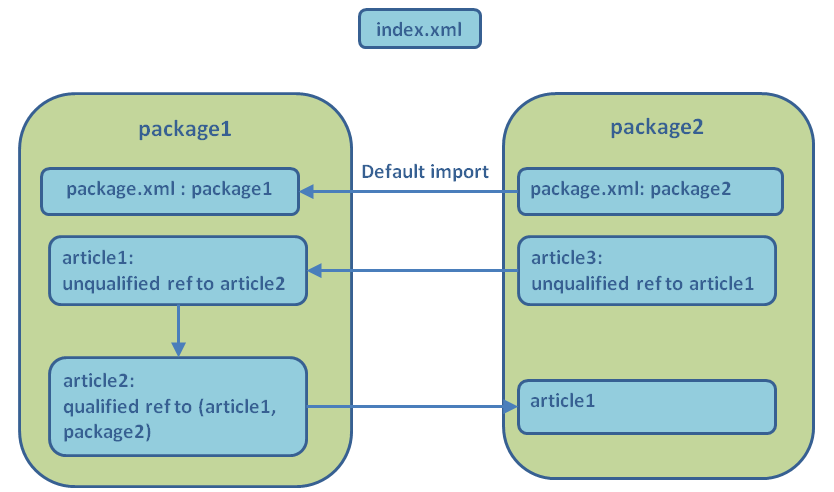

Home
Categories
Dictionary
Download
Project Details
Changes Log
What Links Here
How To
Syntax
FAQ
License
Root directories and packages
1 Use cases
2 Usage with one root directory
3 Usage with more than one root directory
3.1 Usage with many roots
4 Defining a package for a root
4.1 Grammar
5 Using package IDs
6 Default imports
6.1 Default imports on all packages
7 Using the inputs sub-directories
8 Limitations on package definition
9 Enforcing the dependencies between packages
10 Example
11 See also
2 Usage with one root directory
3 Usage with more than one root directory
3.1 Usage with many roots
4 Defining a package for a root
4.1 Grammar
5 Using package IDs
6 Default imports
6.1 Default imports on all packages
7 Using the inputs sub-directories
8 Limitations on package definition
9 Enforcing the dependencies between packages
10 Example
11 See also
By default docJGenerator takes the content of only one input (root) directory, and generates the resulting wiki in one output directory. However, it is possible to:
This makes possible to define only one set of articles, but generates various resulting wikis depending on the generation configuration. Some use cases would be:
In that case, it is possible to define packages for each root directory to avoid name clashing between articles, resources, and images between two root directories. To do that, you can define package IDs for each root directory. These IDs work as namespaces for all references in the wiki.
If you have many roots, it can be bothersome to specify ezch of the root one by one. The following boolean options allow to have one root for each sub-directpotry of the specified inputs directory:
Note that the name of a package can only contain letters, digits, "-" or "_" characters. For example, the following names are valid:
The way articles, images, and resources are found is:
It is possible to specify that the inputs sub-directories will be used rather that directly the inputs directory, by using the
For example, suppose that we have three packages, named
It is possible to enforce the dependencies between packages by specifying the dependencies configuration property.
- Use the content of several input directories to generate the resulting wiki
- Define for each root directory a specific package ID, and enforcing the references from one package to another
Use cases
Main Article: Usage of packages
This makes possible to define only one set of articles, but generates various resulting wikis depending on the generation configuration. Some use cases would be:
- Generating a documentation for both Open Source and Closed Source parts, generating a limited documentation for the Open Source users of the project, and a complete one for the Closed Source users of the project
- Don't include an unfinished part of your wiki in the generated result, but you have show errors for references to this part
Usage with one root directory
The simplest way to use the generator is to use it with only one input (root) directory. This usage is straightforward:- The generator will look for all the articles, resources, and images in the unique root directory (recursively going into sub-directories), and generate the HTML wiki result in the output
- There is only one "namespace" for all articles, images and resources in the input directpries, which means that if the tool finds for example two images with the same ID, it will emit an error
Usage with more than one root directory
However, it is possible to define more than one root directory and merge the documentation from all these input directories in one output wiki. In that case, an index file should be specified. For example:
java -jar docGenerator.jar -input=wiki/input;wiki2/input -index=myIndex.xml -output=wiki/output
Note that this file does not need to be in one of the root directories.In that case, it is possible to define packages for each root directory to avoid name clashing between articles, resources, and images between two root directories. To do that, you can define package IDs for each root directory. These IDs work as namespaces for all references in the wiki.
Usage with many roots
Main Article: Using the inputs sub-directories
If you have many roots, it can be bothersome to specify ezch of the root one by one. The following boolean options allow to have one root for each sub-directpotry of the specified inputs directory:
- The inputsSubdirectories or includeSubdirectories properties in the configuration file
- The inputsSubdirectories or includeSubdirectories properties in the command-line
Defining a package for a root
To define a package ID for a root directory, you have to create an XML file with only one "package" element. For example:<package package="mypackage"/>There can be only one package defintion per root directory (only the first one will be taken into account, the others will be discarded).
Note that the name of a package can only contain letters, digits, "-" or "_" characters. For example, the following names are valid:
MyPackage, ThePackage12, Another_Package, core-package
Grammar
See The package declaration Schema.Using package IDs
The package ID is used as a namespace, and can be referenced in:The way articles, images, and resources are found is:
- If the reference has no package attribute, the generator will look for references having the same package definition as the origin root (found within the same root directory)
- Else the generator will look for a reference in the specified package
Default imports
It is possible to define packages which will be imported by default in a package. For example:<package package="mypackage"> <defaultImports> <import package="thePackage"/> </defaultImports> </package>In that case, if the reference has no package attribute:
- The generator will first look for a reference in the same package
- Else it will look for a reference in one of the default import packages
Default imports on all packages
You can specify that a package has imports by default to all other packages by using theallImports element. For example:<package package="mypackage"> <defaultImports> <allImports/> </defaultImports> </package>In that case, if the reference has no package attribute:
- The generator will first look for a reference in the same package
- Else it will look for a reference in any other package
Using the inputs sub-directories
See also command-line and configuration file
It is possible to specify that the inputs sub-directories will be used rather that directly the inputs directory, by using the
inputsSubdirectories or includeSubdirectories property:For example, suppose that we have three packages, named
root1, root2, and root3:-- wikiSource ------ root1 ------ root2 ------ root3You can specify the inputs by:
java -jar docGenerator.jar -input=wikiSource/root1;wikiSource/root2;wikiSource/root2 -output=wiki
Or by using the inputsSubdirectories or includeSubdirectories property:
java -jar docGenerator.jar -input=wikiSource -inputsSubdirectories=true -output=wiki
Limitations on package definition
The following limitations are enforced:- You can't have two packages with the same name
- You can't have a package under a directory which already is defined in a package
package1.xml declaration in the root1 directory, and another package2.xml declaration under the root2 sub-directory:wikiSource --- root1 ------ package1.xml ------ article1.xml ------ index.xml ------ root2 ---------- package2.xml ---------- article2.xml
Enforcing the dependencies between packages
Main Article: Packages dependencies
It is possible to enforce the dependencies between packages by specifying the dependencies configuration property.
Example
The following example has two root directories:- One defining the "package1" package
- One defining the "package2" package, with a default import to "package1"

See also
- Packages dependencies: This article explains how to enforce package dependencies
- Usage of packages: This article explains how the use cases of packages
- Packages tutorial: This article is a tutorial using Packages to separate Open Source and Closed Source content in your wiki
×

Categories: Structure